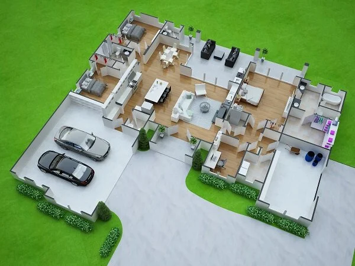

Building your dream home is one of the biggest investments of your life. Proper planning helps reduce unnecessary expenses and ensures a smooth construction journey.
Choose a location with good connectivity, drainage, and future development potential.
Plan your construction budget carefully, including materials, labor, approvals, and unexpected expenses.
Using premium cement, steel, bricks, and electrical materials improves the strength and lifespan of your home.
An experienced construction company ensures quality workmanship and timely project completion.
Secure building permits and approvals before starting construction.
Always prioritize worker safety and follow construction regulations.
Regular site visits help ensure quality and timely completion.
Think about furniture, lighting, ventilation, and future expansion during the design phase.
Consider smart home automation and energy-efficient systems.
Partnering with a reliable construction company ensures your dream home is built with quality, transparency, and trust.
Get Free Consultation